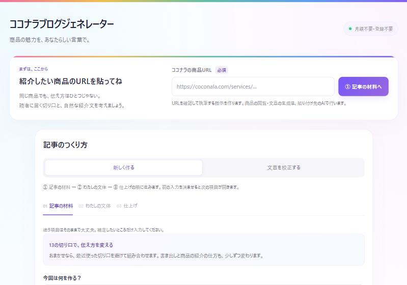

ブログやSNSで、ココナラの外からも商品ページに来てもらえる入口を作る。
出品したばかりのころは評価が少ないので、ココナラの検索だけではなかなか見つけてもらえません。ブログやSNSで入口を増やすと、ココナラの外からもお客様が来てくれるようになります。ただし、誘導の向きを間違えると規約違反になるので、最初に正しい向きを確認します。
いちばん大事なルール：誘導は一方通行
自分のSNSやブログで「ココナラで占いをしています」と紹介する。プロフィール欄にココナラのURLを置く
ココナラのプロフィール・商品ページ・トークルームに、SNSのリンクやIDを書く
「SNSもやっています」と書きたくなっても、ココナラ側には絶対に書かないでください（STEP 7の外部誘導と同じ扱いです）。
ブログジェネレーターで記事を書く
虹オフィスツールブログを書いておくと、「彼の気持ち 知りたい」のような言葉で検索した人が記事を読み、そこから商品ページに来てくれます。ココナラブログなら、記事と商品ページがココナラの中でつながります。noteなど、ほかのブログにも使えます。

- 紹介したい商品のURL（コピーのしかたはSTEP 2）
- 作るもの：記事1本／違う切り口で3本／まず企画を5案
- 切り口：13種類から選ぶか「おまかせ」
- 載せる場所、記事の種類、届けたい人、伝えたいこと
- 一人称や語り方、雰囲気
- 自分が書いた文章の見本を入れると、言い回しをまねてくれます
- 記事を書くプロンプトと、表紙・挿絵の画像を作るプロンプトができます
- 3つの画面を入力してプロンプトを作る
- 文章のプロンプトをChatGPTに貼って、記事を書いてもらう
- 画像のプロンプトで、表紙と挿絵を作る
- 記事を読み直して、自分の言葉に直してから公開するツールの「文章を校正する」も使えます
13の切り口：同じ商品でも、切り口を変えると違う人に届きます。最初は「おまかせ」で大丈夫です。
Threadsを使う
Threadsは文章が中心で、広がりやすく、保存や引用もされやすいSNSです。占いは「あるある」や「診断」の投稿が特に伸びやすいジャンルです。
「○○座は今週、変化のタイミング」のような短い文を、毎日同じ時間に。短く、回数多くが基本です。
「復縁できる人の特徴5つ」のように、1つのテーマを何回かに分けて続けて投稿し、続きを読みたくさせます。
- 1つめの投稿に全力を注ぐ：ツリーは1つめだけがタイムラインに流れます。「えっ」と思わせる一言で目を止めてもらいます。
- 引用投稿で深掘りする：1日たってから関連する話題で引用すると、もう一度表示されやすくなります。
- コメントには短く返す：DMに誘わず、Threadsの中でやりとりを終えます。
Instagramを使う
Instagramは「保存される画像」から広がります。Canvaで占いのテンプレートを作り、何枚かをスワイプして見るカルーセル投稿にしましょう。
- Canvaで占いのテンプレートを作る星座別ランキング、タロットカードの一覧など
- カルーセル（複数枚）で投稿して、保存・シェアされやすくする
- プロフィール欄のリンクから、ココナラの商品ページへ案内する
- 1枚目で結論を見せる：「あなたの星座は何位？」ではなく「3位：○○座」まで見せて、続きを気にならせます。
- 最後の1枚に「保存してね」：保存の数は、Instagramがとても重視する数字の1つです。
- シリーズにする：同じテンプレートを曜日を決めて投稿すると、見に来る習慣ができます。
投稿の本文や画像に、LINEやメールアドレスは書きません。
TikTokライブを使う
ライブ配信は、「この人は実際にいて、ちゃんと話せる人だ」と伝わるのがいちばん早い方法です。
- 配信の最初に「コメントに一言鑑定をします」と伝えて、人を集める
- コメントで届いた相談に、その場で短く答えていく
- 最後に「もっと詳しく知りたい方はプロフィールのリンクから」と一言添える
- 曜日と時間を決める：「毎週金曜21時」のように決めると、予定を空けて見に来てくれる人が増えます。
- 無料の鑑定は広く浅く：無料で深く見すぎると、有料の鑑定の価値が下がります。
- アーカイブも使う：見逃した人向けに短い動画にすると、ライブ以外の日にも見てもらえます。
案内は「ココナラのプロフィールから」に統一します。
うまくいくコツ
- 全部やらなくていい：ブログ、Threads、Instagram、TikTokの中から、続けられそうなものを1つ選んで始めましょう。
- 1回より「続けること」：ブログなら「違う切り口で3本」を作って、週に1本ずつ出すと続けやすいです。
- お客様の話を書くときは、本人と分からないように：名前や細かい状況を変えて、特定されないようにします。
- 結果を約束しない：SNSやブログでも「必ず叶う」のような言葉は使いません。
宿題
曜日・時間と、何を投稿するかを1行ずつ
ここに書いた内容は、このブラウザの中だけに保存されます。